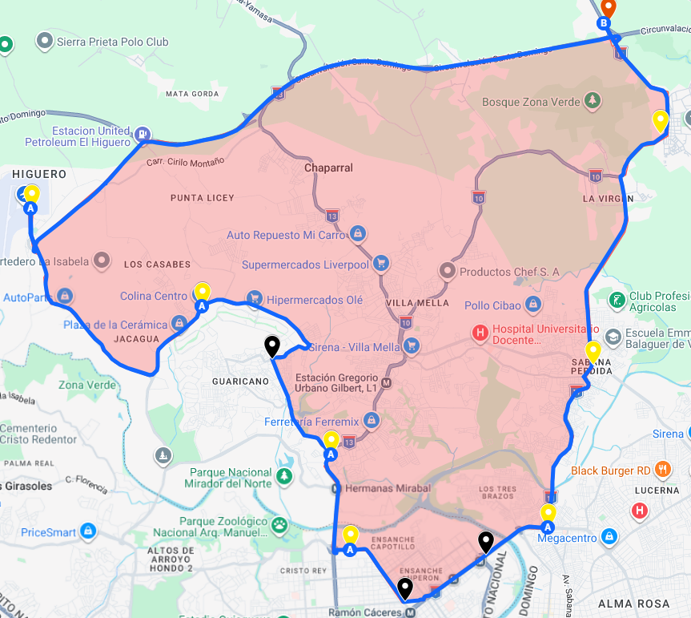

Encuentra tu parada mas cercana
Escribe a donde vas, permite tu ubicacion y la app te dira cual estacion te queda mas cerca para empezar tu ruta.
Esperando ubicacion del usuario...
Resultado
Todavia no se ha calculado una parada cercana.
Paradas disponibles
Cargando datos...
Estas son las estaciones disponibles en el recorrido actual de la guagua.
Ruta completa de la guagua
Aqui puedes ver el recorrido general completo antes de elegir tu parada.
